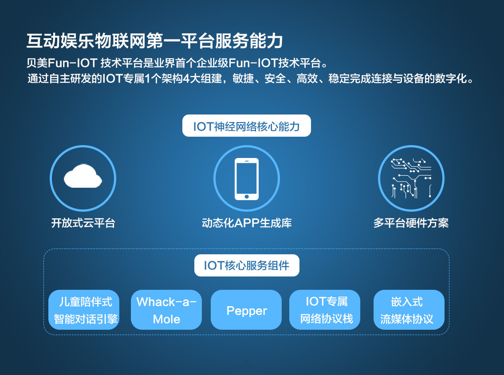
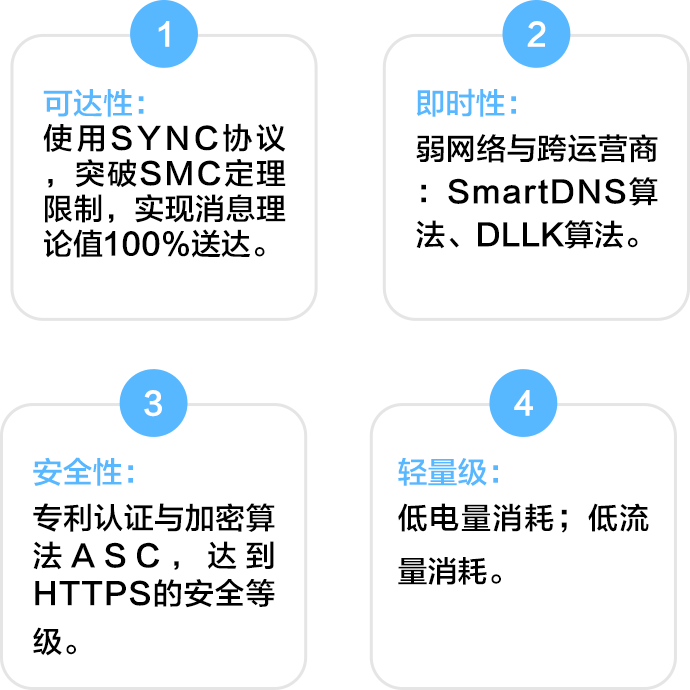
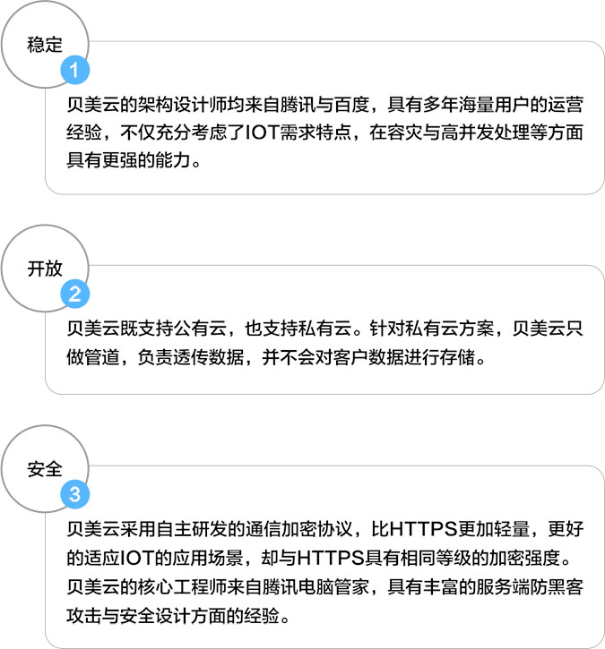

一、IOT神经网络核心能力
贝美建立了全新的IOT神经网络，全面覆盖Remote与Local场景，解决了MQTT协议自身服务质量差、安全性弱、可扩展性差、服务端不开源等问题。

二、贝美IOT核心服务组件
贝美专门成立的Pepper实验室研发出多项专利技术解决IOT设备交互体验问题，并将此能力打包成IOT核心服务组件开放给合作伙伴。
核心技术特性:
儿童陪伴式智能对话引擎
1
陪伴式智能对话引擎
一改Siri类问答式成人模式，独创启发式问答算法，能很好的激发儿童的探索欲与兴趣。
2
儿童专属语义分析引擎
建立儿童专属的语义分析引擎，从儿童视角去理解问题，并且用儿童能够理解语言来回答。
3
智慧陪伴引擎
学习每一个用户性格与喜好，自适应算法，让每个设备变得让用户更加喜欢。
FUN-IOT最小神经节点
1
FUN-IOT首家在m3架构上（100K RAM）实现完整通信协议栈。
2
超低功耗：保持通信链路的情况下功耗做到8-10ma。
3
低成本：促进IOT设备的落地与普及。
业内最快网络配置技术
目前大部分IOT设备都不具备屏幕与键盘式输入按键，如何快捷安全的为IOT设备配置网络成为一大难题。
Pepper技术为贝美的专利技术，通过该技术可以在不增加任何成本的情况下，让用户一键为IOT设备配置网络，典型配置时长为5s，一次配置成功率在99%以上。
Whack-a-Mole简化生产流程并且体验最佳的设备绑定技术
1
简化生产过程，使得IOT硬件可像传统硬件一样批量化生产。
2
用户绑定更加方便，无需保持二维码。
重写网络协议栈
更好的适应IOT嵌入式设备与LWIP相比，具有以下几个优点：
1
传输速度更快，传输效率大大提升。
2
链接更加稳定，更好适应弱网络环境。
3
支持更多的网络协议。
4
进一步减少了内存以及代码空间的占用。
自主研发嵌入式流媒体协议，实现流畅的在线播放体验
解决了业内“流媒体协议”不能在资源紧缺的轻量级嵌入式设备上运行问题！
1
流媒体服务的应用能减少设备对本地存储的依赖，在保证体验的情况下大大降低的成本。
2
服务稳定，在弱网络环境下也能提供流畅的流媒体播放体验。
3
轻量级流媒体协议，运行时内存占用在100k左右，能很好的适应轻量级的嵌入式系统。
三、贝美开放式云服务
业内领先的IOT云架构设计；微信级的稳定性与安全性。

四、动态化APP生成库
贝美客户端团队来自腾讯微信，在架构设计、用户体验、稳定性、流量控制、弱网络等方面具有业界领先的技术和经验。
提供APP技术服务的两种方式：
1、SDK：包含基础功能组件与基础GUI，客户可根据自己的需求进行裁剪。
2、提供定制化的APP，只需要勾选功能项，即可动态化生成定制APP，为客户提供交钥匙的方案。
五、多平台硬件方案
核心技术特性:
多平台、多OS适配。
贝美Fun-IOT 技术平台已经完成对多个硬件方案与OS的适配，客户可以根据自己的需求在多个方案中进行选择。
目前适配的硬件方案包括：
1）新唐平台
2）MTK功能机平台
3）RealTekIOT平台
目前适配的OS方案包括：1）Linux2）RTOS3）Android